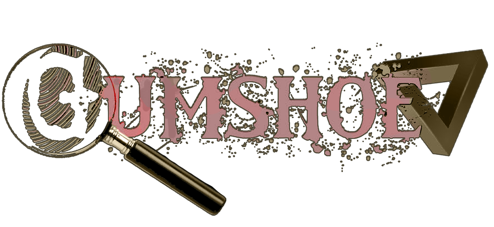
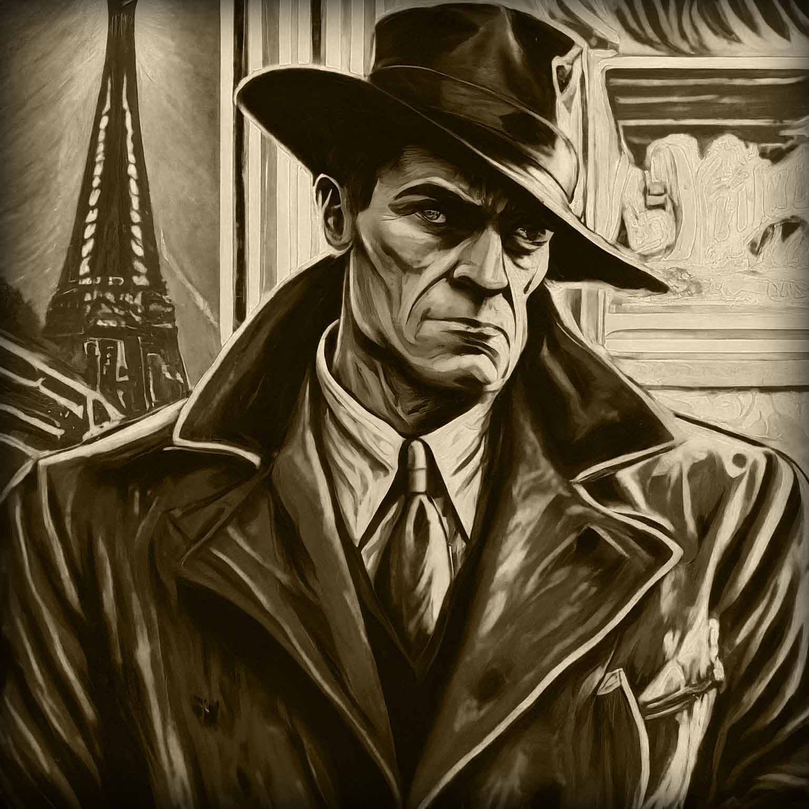
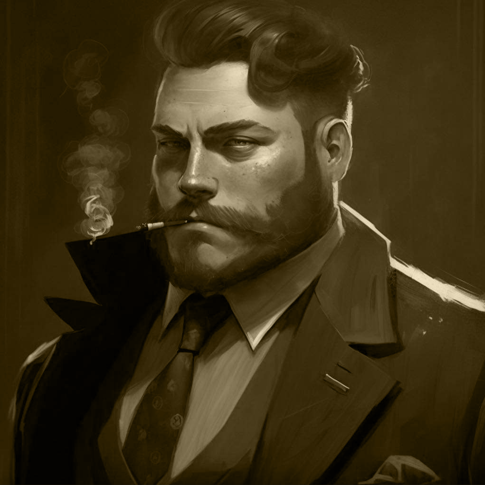

" This dame, Neon City, she shines brighter than a dozen
interrogation lamps, but beneath that glitz and glamour, there's a
darkness thicker than a week-old cigar.
Yeah, the night sky's a canvas for a million neon signs, and the
air thrums with music that'd make a saint tap a foot. But listen
closer, and you hear the clink of bootleg liquor glasses in
speakeasies tucked away in forgotten alleys.
Burlesque halls and opium dens offer their own kind of escape, the
fast kind that leaves you hollowed out and wanting more. And if
you manage to steer clear of those temptations, you still gotta
face The Block.
Towers of sin, practically touching, each room a portal to a
different kind of vice. Gambling, girls, shows you wouldn't
believe. They call it a marvel of modern society, but it's a
monument to mankind's darkest desires.
Neon City's underbelly, it ain't just about this town, see? It's a
reflection of somethin' deeper, somethin' that lurks in all of us,
waiting for the right moment to slither out."

Neon City
☆☆☆ June 6, 1936 ☆☆☆
 The Story
The Story
 You will be purused by Agents of the Mysterious Penrose Division of
the FBI. Their goals and interests unknown, they seem to be stalking
your every move. They are a force to be reckoned with and will stop at
nothing to keep you from uncovering the truth.
You will be purused by Agents of the Mysterious Penrose Division of
the FBI. Their goals and interests unknown, they seem to be stalking
your every move. They are a force to be reckoned with and will stop at
nothing to keep you from uncovering the truth.

Search for Clues in Neon City

Dodge Gangters and Crooked Cops

Solve a mystery that's out of this world!
How to Play
Check the Downloads Section
for Character Sheet
Gumshoe Neon City, the dame whispered, tracing a fingertip across the condensation on the glass. "A role-playing game for you and your pals, she purred." One of you, the grizzled storyteller, sets the scene, weaving a web of lies and secrets as thick as the fog rolling off the docks. The rest of you, hardened gumshoes with more scars than morals, step into the neon-lit shadows, chasing phantoms and buried truths.
The dame's death, once a closed case, now bleeds suspicion. Was she really dead? Or was she just another pawn in a game you didn't even know you were playing? Neon City holds more secrets than a double-breasted trench coat has pockets, and you'll need all your wits, brawn, and maybe a good dame on your side to survive its dark embrace.
So grab your fedora, slug down the rest of that whiskey, and step into the neon abyss. The clock's ticking, gumshoe. And in Neon City, time is measured in bullets. 
⚜ Choose a Role: StoryTeller Player
⚜ Necesary Resources: Character Sheet & Pencil Standard RPG Dice Your Imagination!
Players
Players Click here
So, craft your legend wisely, because in Neon City, your reputation can precede you.
See more on the Players page!
StoryTellers
StoryTellers Click Here
Downloads and Resources
Welcome to a hidden alleyway chock full of essential gear. Here you'll find character sheets, crisp and clean, ready to be filled with the grit and grime of your player's persona. And a Starter Adventure to get you and your crew started on your first case.
So, don't be a flatfoot, partner. Gear up, fuel the narrative firepower, and get ready to dive back into adventure and the neon abyss.
 ✓ Character Sheet
✓ Starter Adventure
✓ Character Sheet
✓ Starter Adventure
The Developer
View My Portfolio Click here

I'm Ryan Fann, the 8BitGinger, a
full-stack developer with a passion for creating immersive,
interactive experiences.
I specialize in web development, game/graphic design, and
digital storytelling.
My goal is to create engaging,
user-friendly applications that bring people together and spark
their imagination.
Let's chat!